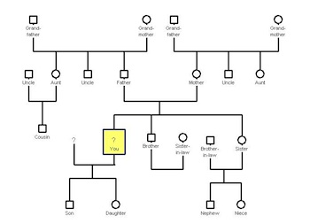

FAM-MED
แบบบันทึกสุขภาพผู้ป่วยและครอบครัว
ภาควิชาเวชศาสตร์ครอบครัว คณะแพทยศาสตร์โรงพยาบาลรามาธิบดี
ภาควิชาเวชศาสตร์ครอบครัว คณะแพทยศาสตร์โรงพยาบาลรามาธิบดี
Department of Family Medicine
- รหัสโรงพยาบาล
- HN 9785356
- สถานะการเยี่ยมบ้าน
- เยี่ยมต่อ
- ประเภทการเยี่ยมบ้าน
- Home visit care
- แพทย์เจ้าของไข้
- นพ.ประสงค์ ทรงธรรม (013651)
- เลขที่บัตรประชาชน
- 3 6442 33000 27 8
- ชื่อ-นามสกุล
- นาง มาลิณี เกียรติขจร
- ที่อยู่ปัจจุบัน
- เลขที่ 270 หมู่ที่ 1 อาคาร/หมู่บ้าน สุขนคร ซอย สามัคคี ถนน พระรามหก แขวง/ตำบล ทุ่งพญาไท เขต/อำเภอ ราชเวที จังหวัด กรุงเทพมหานคร 10400
- เพศ
- หญิง
- วัน เดือน ปีเกิด
- 13 มีนาคม พ.ศ.2498
- อายุ
- 60 ปี 10 เดือน
- โทรศัพท์มือถือ
- 096 452 1596
- โทรศัพท์ที่ทำงาน
- -
- โทรศัพท์ที่บ้าน
- 02 644 9042
- สถานภาพ
- สมรส
- ศาสนา
- พุทธ
- ระดับการศึกษา
- มัธยมศึกษาตอนต้น
- อาชีพ
- แม่บ้าน/ว่างงาน
- สิทธิการรักษา
- เบิกได้
- ข้อมูลญาติที่ติดต่อได้
-
ญาติคนที่ 1:
ชื่อ-นามสกุล: นาง กนกวรรณ เกียรติขจร เกี่ยวข้องเป็น ลูกสาว
เบอร์ติดต่อ: 095 965 4523
ญาติคนที่ 2:
ชื่อ-นามสกุล: นาง ปราณี เกียรติขจร เกี่ยวข้องเป็น น้องสาว
เบอร์ติดต่อ: 094 456 1234 - แผนผังครอบครัว
- 
- แผนที่บ้าน
- การผ่าตัด
- เคยผ่าตัด ไส้ติ่ง
- การแพ้ยา/แพ้อาหาร
- ไม่มี
- แพทย์ทางเลือก
- ไม่มี
- สุรา
- เลิกดื่มแล้ว และ ไม่มีปัญหาเกี่ยวกับการดื่ม
- บุหรี่
- ไม่เคยสูบ
- สถานะทางการเงิน
- ไม่มีปัญหา
- ประวัติโรคในครอบครัว
-
- Hypertension
- Stroke
- รหัสการวินิจฉัยปัญหา
-
- B07 Viral warts
- E117 Non-insulin-dependent diabetes mellitus ,with multiple complications
- ผู้บันทึกข้อมูล
- นพ.ประสงค์ ทรงธรรม (013651) เมื่อวันที่ 24/09/2559